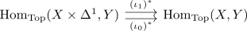

continuous maps up to homotopy as coequalizer
Proposition
Let $X,Y$ be topological spaces. Then the set of continuous maps $X \rightarrow Y$ up to homotopy is an coequalizer

where $\iota_0,\iota_1: X \rightarrow X \times \Delta^1$ are the inclusions
Proof
follows analogously to simplicial maps up to homotopy as coequalizer